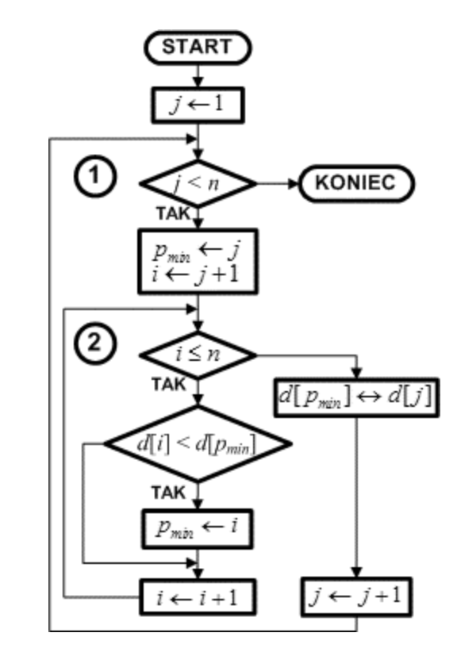

1. Przejdź przez zbiór od pierwszego elementu do przedostatniego.
2. Uznaj bieżący element za tymczasowo najmniejszy.
3. Przejdź przez pozostałą, nieposortowaną część zbioru, szukając elementu mniejszego niż tymczasowo najmniejszy.
4. Jeżeli znajdziesz element mniejszy, uznaj go za nowy najmniejszy.
5. Po zakończeniu przeglądania nieposortowanej części zbioru, zamień miejscami bieżący element z elementem najmniejszym.
6. Powtarzaj kroki 2-5 dla każdego kolejnego elementu w zbiorze.
7. Zakończ proces, gdy cały zbiór będzie posortowany, i wyeksportuj uporządkowany zbiór danych.
class SortowaniePrzezWybor {
static void sortowaniePrzezWybor(int[] zbior) {
int rozmiar = zbior.length;
for (int i = 0; i < rozmiar - 1; i++) { -- (1)
int indeksMinimum = i; -- (2)
for (int j = i + 1; j < rozmiar; j++) { -- (3)
if (zbior[j] < zbior[indeksMinimum]) {
indeksMinimum = j; -- (4)
}
}
int temp = zbior[i]; -- (5)
zbior[i] = zbior[indeksMinimum];
zbior[indeksMinimum] = temp;
}
}
public static void main(String[] args) {
int[] zbior = {7, 2, 1, 6, 8, 5, 3, 4};
sortowaniePrzezWybor(zbior);
System.out.print("Posortowany zbior: ");
for (int i = 0; i < zbior.length; i++) {
System.out.print(zbior[i] + " ");
}
}
}
Schemat blokowy
